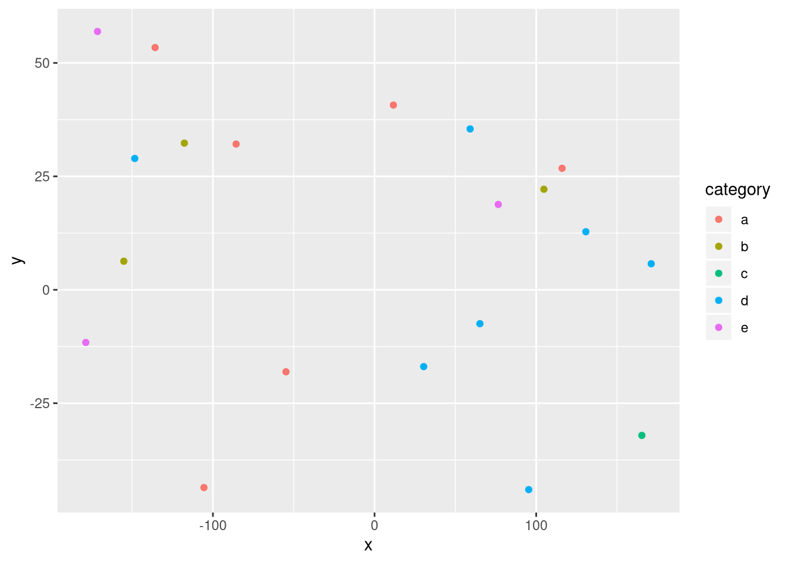

My really awesome and complete introduction will go here.
Narrative and most code will go here. Describe what you are doing and show how to do it (with code).
You can do bullets like this:
You can do numbers like this:
See http://rmarkdown.rstudio.com/ for all the amazing things you can do.
Here’s my first code chunk.
1+2## [1] 3Load any required packages in a code chunk (you may need to install some packages):
library(tidyverse)
library(leaflet)
library(kableExtra)
knitr::opts_chunk$set(cache=TRUE) # cache the results for quick compilingn=20
data=data.frame(x=runif(n,-180,180),
y=runif(n,-60,60),
size = runif(n, 5, 20),
category = factor(
sample(letters[1:5], n, replace = TRUE)
),
value = rnorm(n))data %>%
slice(1:10) %>% #show only 1:n rows
kable(digits=2,align="c")%>% #make table and round to two digits
kable_styling(bootstrap_options =
c("striped", "hover", "condensed", "responsive")) #apply other formatting| x | y | size | category | value |
|---|---|---|---|---|
| 65.17 | -7.47 | 6.23 | d | -0.39 |
| -105.56 | -43.59 | 16.90 | a | -1.63 |
| -135.76 | 53.39 | 19.42 | a | -0.62 |
| 165.36 | -32.10 | 13.30 | c | -0.46 |
| -148.35 | 28.94 | 13.59 | d | 1.12 |
| 171.16 | 5.74 | 17.43 | d | 0.74 |
| 30.40 | -16.93 | 13.51 | d | 0.05 |
| -54.79 | -18.08 | 12.76 | a | 0.54 |
| -85.65 | 32.12 | 11.33 | a | -0.28 |
| -155.11 | 6.30 | 11.07 | b | -0.77 |
Add any additional processing steps here.
Show tables, plots, etc. and describe them.
m <- leaflet(data) %>%
addTiles() %>%
addCircleMarkers(~x, ~y, radius = ~size,color = ~as.factor(category)) %>%
addPopups(~x[2], ~y[2], "Random popup")
m # a map with the default OSM tile layerMap of completely random data
data %>%
ggplot(aes(x=x,y=y,col=category))+
geom_point()
What have you learned? Are there any broader implications?